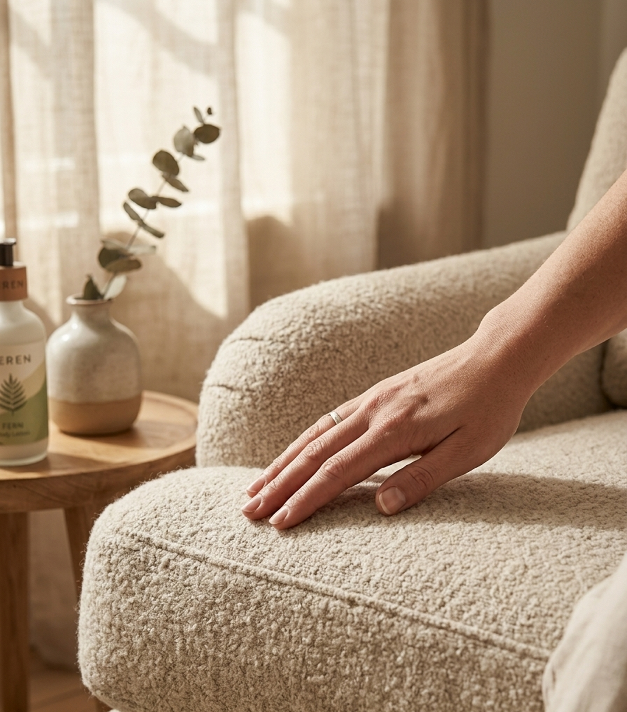
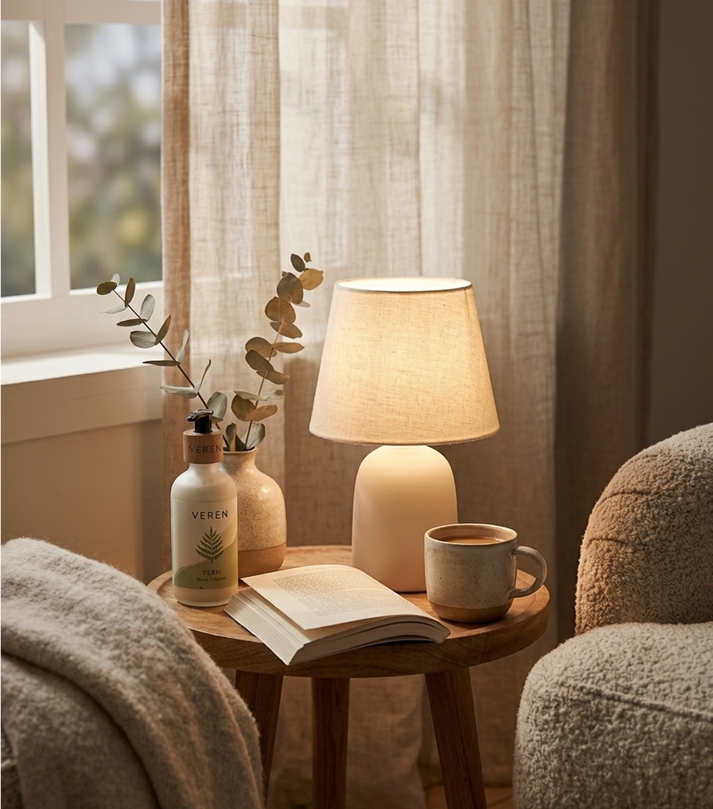
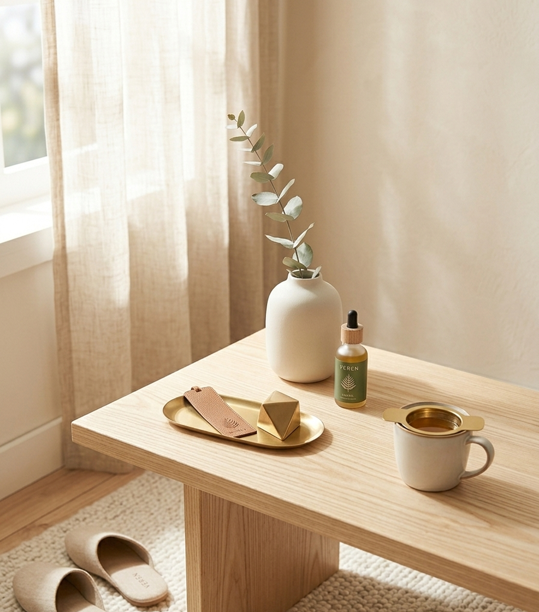
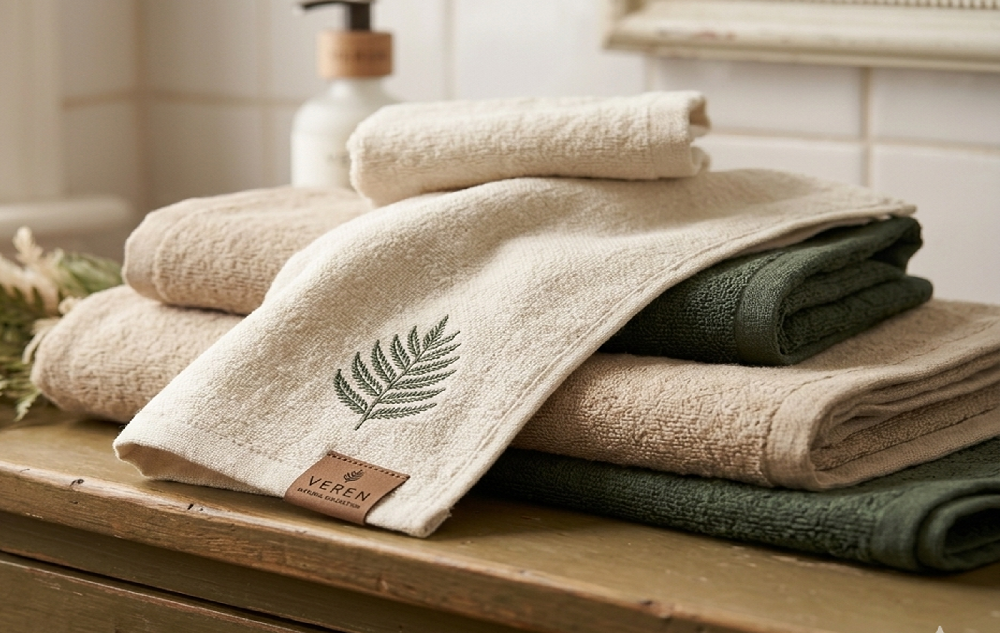
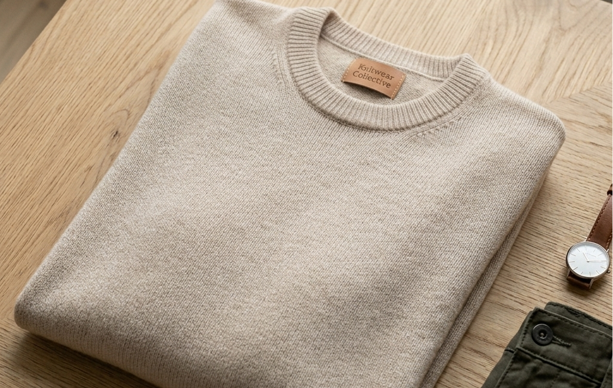
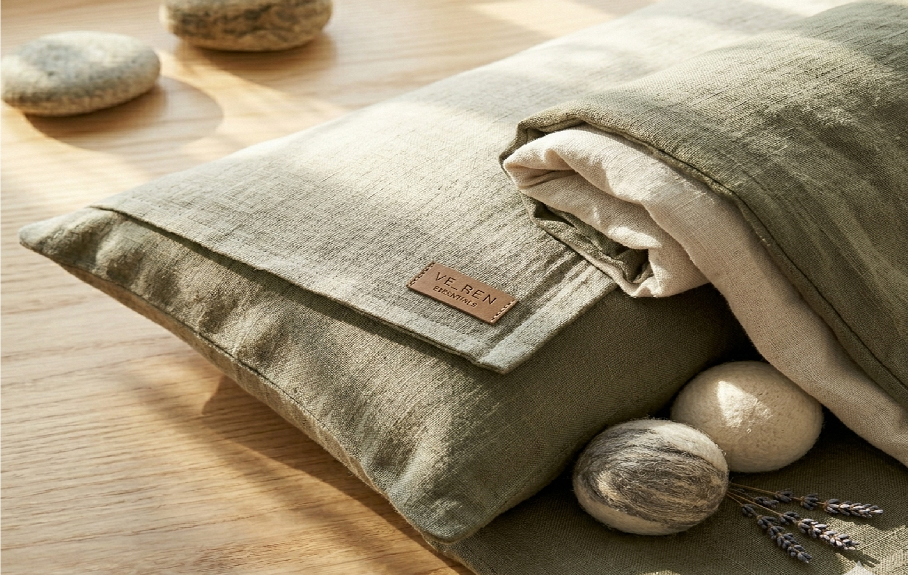

쉬는 것 자체가
힘이 되는 시간이 되어야 합니다.
VEREN은 바쁜 일상 속에서도
마음을 단단히 다잡고 편안히 쉬고 싶은 사람들을 위한
차분한 라이프스타일 브랜드입니다.



눈에 띄기보다 마음이 편해지는
디자인과 경험을 우선합니다.
디자인과 경험을 우선합니다.
차분하지만 단단한 감성으로
사용자의 일상에 여유를 더해줍니다.
사용자의 일상에 여유를 더해줍니다.
쉼을 게으름이나 회피가 아니라
다시 한 걸음 내딛기 위한 필수적인 준비라고 믿습니다.
VEREN은 자연에서 온
소재만을 사용합니다
린넨과 면은 오랜 시간 사람의 손에 닿아온 소재입니다.
화학적으로 가공되지 않은 천연 섬유 본래의 질감은 처음엔
낯설게 느껴질 수 있지만 쓸수록 부드러워지고 몸에 익어갑니다.
별도의 재식재 없이도 스스로 다시 돋아나고
농약 없이도 건강하게 자라는 대나무로 제작합니다.
우리의 도자기는 인공 첨가물 없이
순수한 흙의 질감과 색을 그대로 살립니다.
자연이 오랜 시간 빚어온 흙으로 만든 만큼, 오래 곁에 머뭅니다.
진정한 쉼을 마주하는 곳

VEREN 극세사 수건

라운드 넥 니트
쉬믐 화분

린넨 포근 침구
VEREN과 함께 나만의 안식처를 만들어보세요.